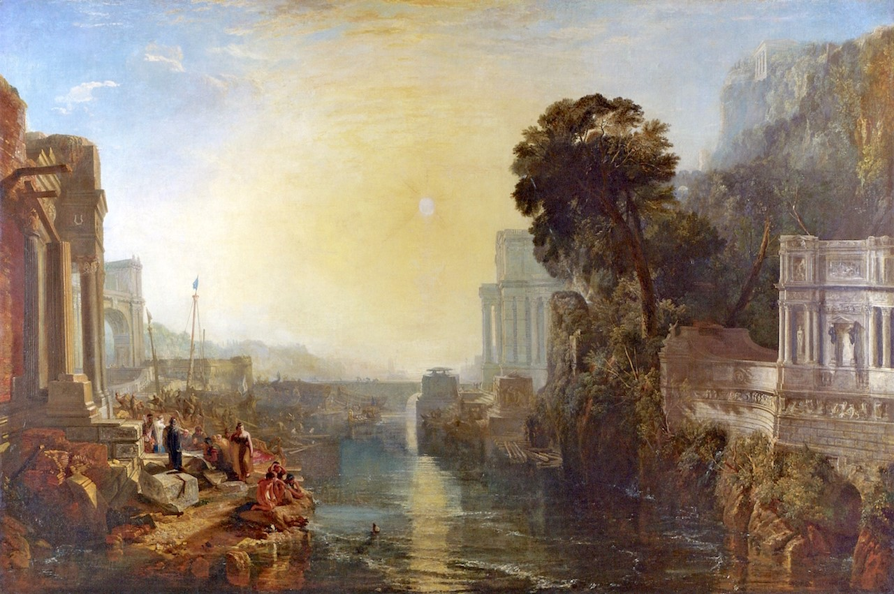

S6S1
Découverte
C’est beau, Didon !
🖼️ Carthage sous le regard de Turner

Observe le port, les bâtiments monumentaux et la lumière. Qu’est-ce qui donne à la ville sa grandeur ?
🃏 Comprendre et retenir
📜 Traduire avec Virgile
🎧 Écouter le texte latin
Miratur Aeneas portas strepitumque et strata viarum.
Repère le sujet en vert, l’accusatif en bleu et le génitif en rouge.
🎬 Les vidéos de la séance
Autour du tableau de Turner
Ouvrir la vidéo dans YouTube ↗
D’Élissa à Didon
Ouvrir la vidéo dans YouTube ↗